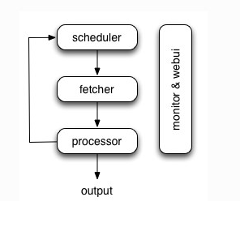

一个国人编写的强大的网络爬虫系统并带有强大的WebUI。采用Python语言编写，分布式架构，支持多种数据库后端，强大的WebUI支持脚本编辑器，任务监视器，项目管理器以及结果查看器。
scrapy是封装了twisted的一个爬虫框架，项目结构比较清晰，其中Item Pipeline决定了数据传输跟保存的结构，而爬虫的核心部分在spider目录下，而爬虫也只需要关系核心的解析规则编写。scrapy框架搭了一个架子，在这框架中其实需要实现的核心功能还是要很多的，但是不需要关心中间件层面的东西了。另外scrapy很方便扩展，因此，是一个很不错的轮子了。
pyspider，这个框架封装了tornado，以及集成了一系列工具，比如lxml, css-selector-help，pyquery，phantomjs等，而且开放的api也相当精简，相当于说，pyspider就是针对新手量身定做的一个框架，类似于scrapy中中间件的东西，这边已经帮你集成好了，所有需要关心的就是你的爬虫规则，甚至爬虫规则都支持单步调试编写，门槛几乎为0了。
pyspider的架构主要分为 scheduler（调度器）, fetcher（抓取器）, processor（脚本执行）：

每个脚本可以灵活使用各种python库对页面进行解析，使用框架API控制下一步抓取动作，通过设置回调控制解析动作。
output部分设计尚未决定，因为希望输出也可以很灵活地进行。现在是在脚本中有一个
on_result的回调，在里面可以自行实现结果输出。
Tornado是一种Web服务器软件的开源版本。Tornado和现在的主流Web服务器框架（包括大多数Python的框架）有着明显的区别：它是非阻塞式服务器，而且速度相当快。得利于其非阻塞的方式和对epoll的运用，Tornado每秒可以处理数以千计的连接，因此Tornado是实时Web服务的一个理想框架。
PyQuery库是jQuery的Python实现，可以用于解析HTML网页内容。
PhantomJS是一个基于webkit的JavaScript API。它使用QtWebKit作为它核心浏览器的功能，使用webkit来编译解释执行JavaScript代码。任何你可以在基于webkit浏览器做的事情，它都能做到。它不仅是个隐形的浏览器，提供了诸如CSS选择器、支持Web标准、DOM操作、JSON、HTML5、Canvas、SVG等，同时也提供了处理文件I/O的操作，从而使你可以向操作系统读写文件等。PhantomJS的用处可谓非常广泛，诸如网络监测、网页截屏、无需浏览器的 Web 测试、页面访问自动化等。
pip install pyspiderpip安装，会自动安装pyspider的依赖库，如tornado,lxml,pyquery等，但phantomjs需要单独安装。
phantomjs 安装：
选取系统对应版本下载，这里介绍linux下安装，解压：
tar -jxvf phantomjs-2.1.1-linux-x86_64.tar.bz2为phantomjs下的bin目录配置环境变量。
安装成功后，执行：
pyspider然后，访问http://localhost:5000/访问控制台。如下图：
大多数情况下，一个项目就是你针对一个网站写的一个爬虫脚本。
TODO- 当一个脚本刚刚被创建时的状态STOP- 你可以设置项目状态为STOP让项目停止运行CHECKING- 当一个运行中的项目被编辑时项目状态会被自动设置成此状态并停止运行．DEBUG/RUNNING- 这两状态都会运行爬虫，但是他们之间是有区别的．一般来说调试阶段用DEBUG状态，线上用RUNNING状态．token-bucket来控制.rate- 每秒执行多少个请求burst- 设置并发数rate/burst = 0.1/3,这个的意思是爬虫10秒爬一个页面．但是开始时前三个任务会同时时行，不会等10秒，第四个任务爬取前会等10秒。实例：
# -*- encoding: utf-8 -*-
from pyspider.libs.base_handler import *
class Handler(BaseHandler):
crawl_config = {
}
@every(minutes=24 * 60)
def on_start(self):
self.crawl('http://scrapy.org/', callback=self.index_page)
@config(age=10 * 24 * 60 * 60)
def index_page(self, response):
for each in response.doc('a[href^="http"]').items():
self.crawl(each.attr.href, callback=self.detail_page)
@config(priority=2)
def detail_page(self, response):
return {
"url": response.url,
"title": response.doc('title').text(),
}代码简单分析：
def on_start(self)
方法是入口代码。当在web控制台点击run按钮时会执行此方法。
self.crawl(url, callback=self.index_page)
告诉pyspider哪些ＵＲＬ需要抓取。
参数url：需要被抓取的url或url列表
参数callback：这个参数用来指定爬取内容后需要哪个方法来处理内容
def index_page(self, response)
这个方法获取一个Response对象。 response.doc是PyQuery对象的一个扩展方法，会调用PyQuery库用返回的内容生成一个PyQuery对象以方便使用，生成对象时默认已经把里面的所有链接格式化成绝对链接，可直接分析使用．。PyQuery是一个类似于jQuery的对象选择器。
def detail_page(self, response)
返回一个结果集对象。这个结果默认会被添加到resultdb数据库（如果启动时没有指定数据库默认调用sqlite数据库）。你也可以重写on_result(self,result)方法来指定保存位置。
更多知识：
@every(minutes=24*60, seconds=0) 这个设置是告诉scheduler（调度器）on_start方法每天执行一次。
@config(age=10 * 24 * 60 * 60) 这个设置告诉scheduler（调度器）这个request（请求）过期时间是10天，10天内再遇到这个请求直接忽略。这个参数也可以在self.crawl(url, age=10*24*60*60) 和 crawl_config中设置。
@config(priority=2) 这个是优先级设置。数字越大越先执行。
运行结果

mysql: 存储数据
redis: 消息队列
supervisor: 进程管理
pyspider命令执行后，在当前目录会自动生成data目录：

project.db: 存储脚本数据result.db: 存储采集到的数据task.db: 任务采集过程数据pyspider默认通过sqlite链接数据库，存储数据，下面配置可以结果存储在mysql中。
创建config.json：
{
"taskdb": "mysql+taskdb://username:password@ip:port/taskdb",
"projectdb": "mysql+projectdb://username:password@ip:port/projectdb",
"resultdb": "mysql+resultdb://username:password@ip:port/resultdb",
"message_queue": "redis://ip:6379/db",
"webui": {
"port": 8888,
"username": "test",
"password": "test",
"need-auth": true
}
}启动：
pyspider -c config.json更多配置选项查看：
pyspider --help
pyspider webui --helpsupervisor是一个用python写的进程管理工具，可以很方便的用来启动、重启、关闭进程。除了对单一进程的控制，还可以同时启动、关闭多个进程，对程序进行监控，当程序退出时，可以自动拉起程序。
通过easy_install安装：
yum install python-setuptools
easy_install supervisor通过pip安装：
pip install supervisor生成配置文件：
mkdir /etc/supervisor
mkdir /etc/supervisor/conf找到echo_supervisord_conf文件，默认在/usr/bin下，运行以下命令，输出默认配置项，并重定向到指定配置文件中：
/usr/bin/echo_supervisord_conf > /etc/supervisor/supervisord.conf修改supervisord.conf:
[include]
files = /etc/supervisor/conf/*.conf在/etc/supervisor/conf下，配置需要管理的进程，可以统一配置，也可以每个进程单独配置，方便管理，下面是pyspider.conf的基本配置：
[program:pyspider]
command=/usr/local/bin/pyspider -c /home/pyspider/pyspider/config.json
autorestart=true
autostart=true
user=pyspider
group=pyspider
directory=/home/pyspider/pyspider
stderr_logfile=/home/pyspider/pyspider/logs/pyspider_err.log
stdout_logfile=/home/pyspider/pyspider/logs/pyspider.log 注释：
command: 启动程序的命令autorestart: 程序异常退出后自动重启autostart: 在supervisord启动时自动启动user, group: 开启进程的用户和组stderr_logfile: 错误日志输出stdout_logfile: 标准日志输出supervisord -c /etc/supervisor/supervisord.conf查看业务进程是否被拉起：
supervisorctl status停止supervisor（子进程也会被停止，也可以针对单个程序进行start，update，restart，stop操作）：
supervisorctl shutdown
supervisorctl stop pyspiderhttp://www.jianshu.com/p/8eb248697475
获取京东手机页面价格
获取淘宝模特资料，图片
获取腾讯nba所有球队的球员列表，并写到excel